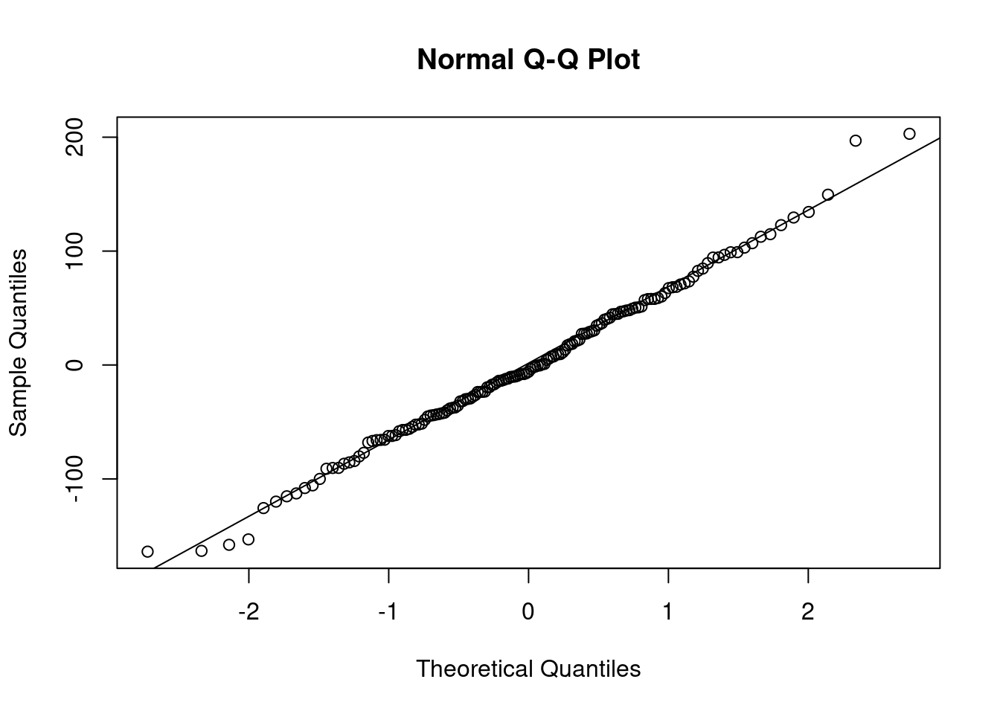
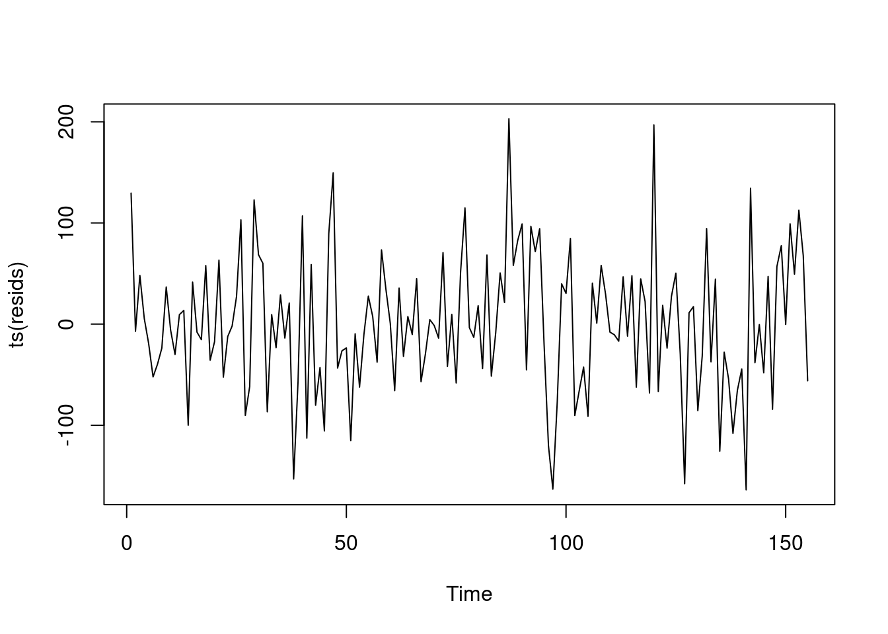
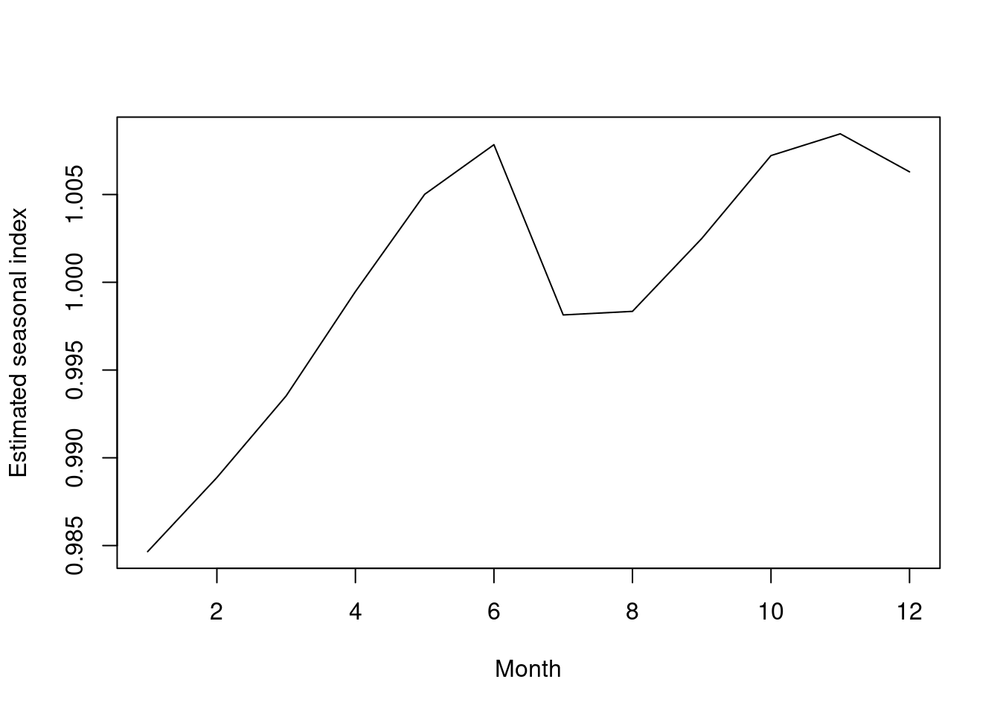

5 periodogram
U.S. economy experienced strong rise from 1991 to start of 2001. First downturn, in year 2001 was bursting of the dot com bubble. Then, a strong increase until the middle of 2007. Etc…
emp <- read.csv("/cloud/project/data/USnonfarmemp.txt")
attach(emp)
head(emp)## Year Month employees logemp dlogemp
## 1 1991 1 107426 11.58456 -0.023459922
## 2 1991 2 107394 11.58426 -0.000297924
## 3 1991 3 107683 11.58695 0.002687411
## 4 1991 4 108072 11.59055 0.003605946
## 5 1991 5 108754 11.59684 0.006290779
## 6 1991 6 109235 11.60126 0.004413074plot(ts(employees,start=c(1991,1),freq=12),xlab="Time",ylab="Employees",main=
"US Nonfarm Employment, in Thousands")
logemp <- log(employees)
plot(ts(log(employees),start=c(1991,1),freq=12),xlab="Time",ylab="Employees",main=
"Log US Nonfarm Employment, in Thousands")
Log series looks better. Shows relatively constant volatility all the way across. Multiplicative model will be more helpful.
5.0.1 Spectral
Look at the structure of the time series itself, to understand what is the structure of the time series, and what variable should we include. First step is to plot the spectral density. Since there is a strong seasonal component, we expect to see action at the monthly frequencies. This is monthly data, and the amount of employment is the average at the month. Rather than a snopshot, this is a representative number. Therefore, calendar frequencies are relevant. 333 and 348 are close together, so if we used a larger span, we wouldn’t see that resolution.
Red lines are the seasonal frequencies. As for calendar, 220 not sig, and does not appear to be a separate peak at 348. 432 might be a peak, but so low that it probably won’t be sig. Yes, there is strong seasonality, and also trending (peak near 0), but calendar variables don’t look to be sig.
In the log version of these spectral plots, the high point in the spectrum will be dampened. And the peaks at the low end will be lower than they were before. The peaks at the high frequencies will be higher. The differencing operation downweights slow movements, and magnifies or enhances fast movements.
## time series had length 330, sqrt(330)/2 = 9. Use a smaller span (here, 5) to look at features of the spectrum more clearly.
### marking the seasonal frequencies and the calendar frequencies.
spectrum(logemp,span=5)
abline(v=c(1/12,2/12,3/12,4/12,5/12,6/12),col="red",lty=2)
abline(v=c(0.220,0.348,0.432),col="blue",lty=2)
5.0.2 Multiplicative
Notice on the residual plot, that the vertical scale goes from -0.03 to 0.04. That is much smaller that the range in the previous plot, which is 11.6 to 11.9. The scale in the plot makes the result look worse than it is. Still, the model can’t handle the trend around the two economic downtown, but things aren’t as bad as this makes it look.
Seasonal index estimates are all close to 1. Greatest deviation from 1 is for January, where the employment is estimated to be about 1.5 percent below trend level. The highest point above trend level is for November, and June is also quite high. The pattern: peaks in June and November, but October, Nov, Dec are all high, and May/June also high. Dip from May June into August. Low point is January, and steady rise from January up until June.
348 is sig. for the log return data because of the differencing operation, which enhances high frequency components. When we just used the log return data, then it becomes sig.
Residual vs. Predictions plot might show little evidence of heterogeneity. Residuals vs. time, still can’t deal effectively with the downturns. The vertical scale is in a low range.
Time<-as.numeric(1:length(employees))
fMonth<-as.factor(Month)
model1<-
lm(logemp~Time+I(Time^2)+I(Time^3)+I(Time^4)+I(Time^5)+fMonth);summary(model1)##
## Call:
## lm(formula = logemp ~ Time + I(Time^2) + I(Time^3) + I(Time^4) +
## I(Time^5) + fMonth)
##
## Residuals:
## Min 1Q Median 3Q Max
## -0.027878 -0.006551 0.000301 0.007037 0.036591
##
## Coefficients:
## Estimate Std. Error t value Pr(>|t|)
## (Intercept) 1.157e+01 5.455e-03 2121.550 < 2e-16 ***
## Time 2.801e-05 2.962e-04 0.095 0.924732
## I(Time^2) 4.514e-05 5.523e-06 8.173 7.56e-15 ***
## I(Time^3) -3.929e-07 4.223e-08 -9.304 < 2e-16 ***
## I(Time^4) 1.217e-09 1.405e-10 8.660 2.55e-16 ***
## I(Time^5) -1.254e-12 1.690e-13 -7.418 1.12e-12 ***
## fMonth2 4.278e-03 3.838e-03 1.114 0.265951
## fMonth3 8.972e-03 3.839e-03 2.337 0.020061 *
## fMonth4 1.494e-02 3.839e-03 3.891 0.000122 ***
## fMonth5 2.047e-02 3.840e-03 5.330 1.88e-07 ***
## fMonth6 2.327e-02 3.840e-03 6.060 3.90e-09 ***
## fMonth7 1.360e-02 3.875e-03 3.510 0.000513 ***
## fMonth8 1.381e-02 3.875e-03 3.563 0.000424 ***
## fMonth9 1.796e-02 3.876e-03 4.633 5.29e-06 ***
## fMonth10 2.266e-02 3.876e-03 5.846 1.26e-08 ***
## fMonth11 2.389e-02 3.876e-03 6.163 2.20e-09 ***
## fMonth12 2.174e-02 3.877e-03 5.607 4.52e-08 ***
## ---
## Signif. codes: 0 '***' 0.001 '**' 0.01 '*' 0.05 '.' 0.1 ' ' 1
##
## Residual standard error: 0.01436 on 313 degrees of freedom
## Multiple R-squared: 0.9717, Adjusted R-squared: 0.9702
## F-statistic: 671.6 on 16 and 313 DF, p-value: < 2.2e-16 plot(ts(resid(model1),start=c(1991,1),freq=12),xlab="Time",ylab="Residual
",main="Residuals for model1 fit to log of US employment")
b1<-coef(model1)[1]
b2<-coef(model1)[7:17]+b1
b3<-c(b1,b2)
seas<-exp(b3-mean(b3))
cbind(seas)## seas
## (Intercept) 0.9846541
## fMonth2 0.9888750
## fMonth3 0.9935277
## fMonth4 0.9994722
## fMonth5 1.0050136
## fMonth6 1.0078399
## fMonth7 0.9981401
## fMonth8 0.9983439
## fMonth9 1.0024941
## fMonth10 1.0072200
## fMonth11 1.0084598
## fMonth12 1.0062928seas.ts<-ts(seas)
plot(seas.ts,xlab="Month",ylab="Estimated seasonal index")
5.0.3 next model
obs217<-c(rep(0,216),1,rep(0,113))
c348<-cos(pi*0.696*Time);s348<-sin(pi*0.696*Time)
c432<-cos(pi*0.864*Time);s432<-sin(pi*0.864*Time)
model2<-
lm(dlogemp~Time+I(Time^2)+I(Time^3)+I(Time^4)+I(Time^5)+I(Time^6)+fMonth+obs217+c348+s348+c432+s432);summary(model2)##
## Call:
## lm(formula = dlogemp ~ Time + I(Time^2) + I(Time^3) + I(Time^4) +
## I(Time^5) + I(Time^6) + fMonth + obs217 + c348 + s348 + c432 +
## s432)
##
## Residuals:
## Min 1Q Median 3Q Max
## -0.0061835 -0.0007854 0.0001046 0.0008955 0.0033661
##
## Coefficients:
## Estimate Std. Error t value Pr(>|t|)
## (Intercept) -2.429e-02 6.728e-04 -36.100 < 2e-16 ***
## Time 2.745e-04 5.155e-05 5.325 1.95e-07 ***
## I(Time^2) -5.677e-06 1.349e-06 -4.209 3.38e-05 ***
## I(Time^3) 5.358e-08 1.526e-08 3.511 0.000513 ***
## I(Time^4) -2.663e-10 8.375e-11 -3.180 0.001626 **
## I(Time^5) 6.704e-13 2.196e-13 3.052 0.002468 **
## I(Time^6) -6.667e-16 2.204e-16 -3.024 0.002704 **
## fMonth2 2.632e-02 4.177e-04 63.020 < 2e-16 ***
## fMonth3 2.672e-02 4.176e-04 63.985 < 2e-16 ***
## fMonth4 2.800e-02 4.178e-04 67.015 < 2e-16 ***
## fMonth5 2.756e-02 4.178e-04 65.980 < 2e-16 ***
## fMonth6 2.484e-02 4.179e-04 59.430 < 2e-16 ***
## fMonth7 1.190e-02 4.217e-04 28.210 < 2e-16 ***
## fMonth8 2.218e-02 4.217e-04 52.596 < 2e-16 ***
## fMonth9 2.611e-02 4.218e-04 61.885 < 2e-16 ***
## fMonth10 2.665e-02 4.218e-04 63.188 < 2e-16 ***
## fMonth11 2.320e-02 4.218e-04 55.007 < 2e-16 ***
## fMonth12 1.980e-02 4.220e-04 46.929 < 2e-16 ***
## obs217 -5.628e-03 1.596e-03 -3.527 0.000484 ***
## c348 -1.792e-04 1.211e-04 -1.481 0.139761
## s348 -2.261e-04 1.205e-04 -1.876 0.061629 .
## c432 -1.248e-04 1.207e-04 -1.034 0.301896
## s432 1.197e-04 1.208e-04 0.991 0.322340
## ---
## Signif. codes: 0 '***' 0.001 '**' 0.01 '*' 0.05 '.' 0.1 ' ' 1
##
## Residual standard error: 0.001548 on 307 degrees of freedom
## Multiple R-squared: 0.9667, Adjusted R-squared: 0.9643
## F-statistic: 405 on 22 and 307 DF, p-value: < 2.2e-16model3<-
lm(dlogemp~Time+I(Time^2)+I(Time^3)+I(Time^4)+I(Time^5)+I(Time^6)+fMonth+obs217+c348+s348);summary(model3)##
## Call:
## lm(formula = dlogemp ~ Time + I(Time^2) + I(Time^3) + I(Time^4) +
## I(Time^5) + I(Time^6) + fMonth + obs217 + c348 + s348)
##
## Residuals:
## Min 1Q Median 3Q Max
## -0.0062743 -0.0007293 0.0001163 0.0009428 0.0032004
##
## Coefficients:
## Estimate Std. Error t value Pr(>|t|)
## (Intercept) -2.427e-02 6.727e-04 -36.075 < 2e-16 ***
## Time 2.736e-04 5.155e-05 5.307 2.13e-07 ***
## I(Time^2) -5.653e-06 1.349e-06 -4.191 3.63e-05 ***
## I(Time^3) 5.331e-08 1.526e-08 3.493 0.000547 ***
## I(Time^4) -2.648e-10 8.375e-11 -3.162 0.001725 **
## I(Time^5) 6.664e-13 2.196e-13 3.034 0.002616 **
## I(Time^6) -6.626e-16 2.204e-16 -3.006 0.002866 **
## fMonth2 2.631e-02 4.176e-04 63.001 < 2e-16 ***
## fMonth3 2.672e-02 4.176e-04 63.969 < 2e-16 ***
## fMonth4 2.798e-02 4.177e-04 67.000 < 2e-16 ***
## fMonth5 2.755e-02 4.177e-04 65.961 < 2e-16 ***
## fMonth6 2.483e-02 4.179e-04 59.417 < 2e-16 ***
## fMonth7 1.189e-02 4.217e-04 28.192 < 2e-16 ***
## fMonth8 2.217e-02 4.217e-04 52.575 < 2e-16 ***
## fMonth9 2.610e-02 4.218e-04 61.867 < 2e-16 ***
## fMonth10 2.664e-02 4.218e-04 63.170 < 2e-16 ***
## fMonth11 2.319e-02 4.218e-04 54.988 < 2e-16 ***
## fMonth12 1.979e-02 4.220e-04 46.911 < 2e-16 ***
## obs217 -5.753e-03 1.591e-03 -3.617 0.000348 ***
## c348 -1.782e-04 1.211e-04 -1.472 0.142082
## s348 -2.256e-04 1.205e-04 -1.872 0.062200 .
## ---
## Signif. codes: 0 '***' 0.001 '**' 0.01 '*' 0.05 '.' 0.1 ' ' 1
##
## Residual standard error: 0.001548 on 309 degrees of freedom
## Multiple R-squared: 0.9665, Adjusted R-squared: 0.9643
## F-statistic: 445.3 on 20 and 309 DF, p-value: < 2.2e-16model4<-
lm(dlogemp~Time+I(Time^2)+I(Time^3)+I(Time^4)+I(Time^5)+I(Time^6)+fMonth+obs217)
anova(model4,model3)## Analysis of Variance Table
##
## Model 1: dlogemp ~ Time + I(Time^2) + I(Time^3) + I(Time^4) + I(Time^5) +
## I(Time^6) + fMonth + obs217
## Model 2: dlogemp ~ Time + I(Time^2) + I(Time^3) + I(Time^4) + I(Time^5) +
## I(Time^6) + fMonth + obs217 + c348 + s348
## Res.Df RSS Df Sum of Sq F Pr(>F)
## 1 311 0.00075384
## 2 309 0.00074030 2 1.3538e-05 2.8253 0.06082 .
## ---
## Signif. codes: 0 '***' 0.001 '**' 0.01 '*' 0.05 '.' 0.1 ' ' 15.0.4 getting seasonal index esetimation from model 3
b1<-coef(model3)[1]
b2<-coef(model3)[8:18]+b1
b3<-c(b1,b2)
x<-b3-mean(b3)
s12<-0
for(j in 2:12){
xsub<-x[j:12]
s12<-s12+sum(xsub)
}
s12<-s12/12
s<-c(rep(0,times=12))
s[12]<-s12
for(j in 1:11){
xsub<-x[1:j]
s[j]<-s[12]+sum(xsub)
}
seas3<-exp(s)
cbind(seas,seas3)## seas seas3
## (Intercept) 0.9846541 0.9844692
## fMonth2 0.9888750 0.9887860
## fMonth3 0.9935277 0.9935282
## fMonth4 0.9994722 0.9995595
## fMonth5 1.0050136 1.0051960
## fMonth6 1.0078399 1.0081125
## fMonth7 0.9981401 0.9980382
## fMonth8 0.9983439 0.9982765
## fMonth9 1.0024941 1.0024441
## fMonth10 1.0072200 1.0071789
## fMonth11 1.0084598 1.0084519
## fMonth12 1.0062928 1.0062989